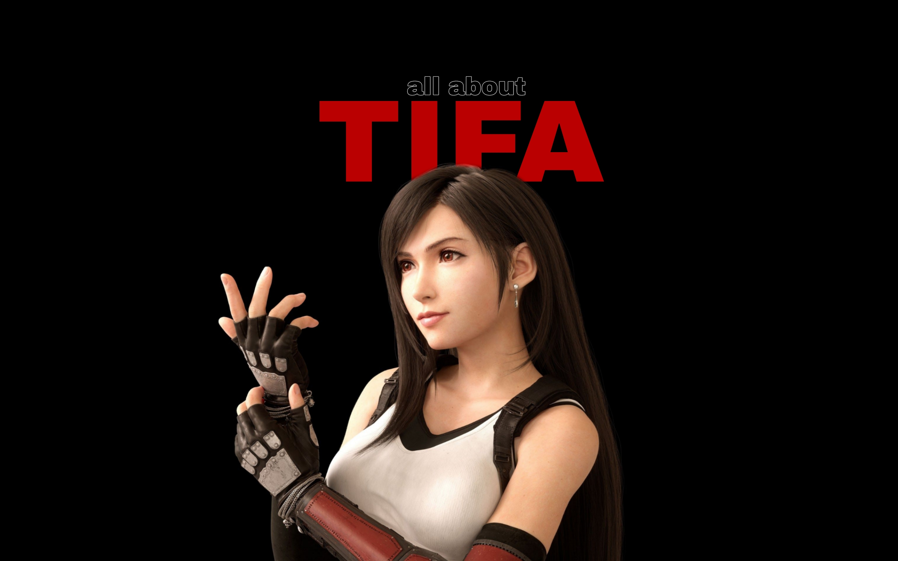

Tifa Lockhart in Final Fantasy VII Remake
Tifa Lockhart
Tifa is Cloud Strife's childhood friend, but she lost contact with him in their early teens before meeting again seven years later and convincing him to join the eco-terrorist group AVALANCHE to fight the Shinra Electric Power Company. She later aids in saving the planet from destruction at the hands of Cloud's former colleague and arch-nemesis, Sephiroth (who became her archenemy for murdering her father, Brian Lockhart).
- Final Fantasy VII (1997)
- Ehrgeiz: God Bless the Ring (1998)
- Itadaki Street Special (2004)
- Kingdom Hearts II (2005)
- Dirge of Cerberus: Final Fantasy VII (2006)
- Itadaki Street Portable (2006)
- Mainichi Issho (2006)
- Dissidia 012 Final Fantasy (2011)
- Final Fantasy Airborne Brigade (2012)
- Final Fantasy: All The Bravest (2013)
- Kingdom Hearts Union χ (2013)
- Gunslinger Stratos 2 (2013)
- Theatrhythm Final Fantasy: Curtain Call (2014)
- Final Fantasy: Record Keeper (2014)
- Final Fantasy Explorers (2014)
- Theatrhythm Final Fantasy: All-Star Carnival (2016)
- Dissidia: Final Fantasy Opera Omnia (2016)
- Final Fantasy VII/Final Fantasy VIII Remastered Twin Pack (2019)
- Final Fantasy VII Remake (2020)
- Final Fantasy VII: Ever Crisis (2022)
Game Appearances
If you have time, you should read more about this incredible character on her Wiki entry